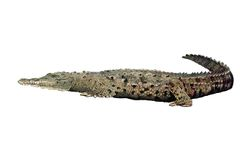
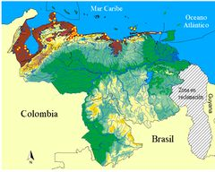

Crocodylus acutus
| Caimán de la Costa | |
|---|---|
|  | |
| Riesgo de extinción | |
 En peligro (UICN) | |
| Clasificación científica | |
| Reino: | Animalia |
| Filo: | Chordata |
| Clase: | Reptilia |
| Orden: | Crocodilia |
| Familia: | Crocodylidae |
| Género: | Crocodylus |
| Especie: | C. acutus |
| Nombre binomial | |
|
Crocodylus acutus Cuvier, 1807 | |
| Distribución | |
|
 Área de distribución de Crocodylus acutus en Venezuela | |
Contenido
Información de Evaluación
- Categoría y Criterio Regional: En Peligro A2cde; C1
- Fecha de Evaluación Regional: 2015
- Evaluadores: Jesús Morales-Campos y Ariany García-Rawlins
- Categoría y Criterio Global: Vulnerable A2cd
Justificación
Evaluaciones Previas
1999: En Peligro (EN)
2008: En Peligro (EN)
Información General
Nombres comunes
Caimán de la Costa, cocodrilo americano, cocodrilo de río, lagarto, caimán de aguja, American crocodile.
Notas taxonómicas
Sinónimos
Crocodilus americanus, Lacerta hispaniolica, Crocodilus acutus, Crocodilus biscutatus, Crocodilus (Champse) biscutatus, Champsa acutus, Molinia americana, Crocodilus pacificus, Molinia acuta, Crocodilus floridanus, Crocodylus acutus acutus
Descripción
Es una especie de cocodrilo de gran tamaño. Los machos pueden superar los 6 m y las hembras, en casos excepcionales, llegan a medir más de 4 m. Su color varía desde gris pálido, algo amarillento y con cierto tinte verdoso, hasta un gris oscuro o negruzco en los individuos más viejos. Presenta una elevación o joroba preocular, que abarca el hueso prefrontal y el nasal del hocico, que se manifiesta mejor en los machos adultos (Álvarez del Toro 1974, Medem 1981, Mazzotti 2002, Thorbjarnarson 2010, Seijas 2011). Es la especie de Crocodilia con el más reducido e irregular arreglo de osteodermos (escamas) cervicales y dorsales (Ross y Mayer 1983, Seijas 2011). Las hembras depositan sus huevos (típicamente entre 25 y 50) en la arena, pero cuando este tipo de sustrato es escaso, pueden cubrirlos con suelo y materia vegetal en descomposición formando un montículo (Álvarez del Toro 1974, Medem 1981). Las crías nacen al comienzo de las lluvias tras un período de incubación de 85-90 días (Seijas et al. 2008). Es un depredador oportunista que consume una amplia variedad de invertebrados y vertebrados cuyo tamaño e importancia relativa cambia a medida que los individuos crecen (Chávez 1992, Seijas 1996).
Distribución
Es el cocodrilo de más amplia distribución en el Neotrópico. Ha sido reportado en diecisiete países de la región. Se encuentra en el sur de Florida en los Estados Unidos, a lo largo de la costa pacífica desde el sur de México hasta el norte del Perú y en todos los países que baña el mar Caribe, incluyendo las grandes islas de Cuba, Jamaica y La Española (Haití-República Dominicana) (Thorbjarnarson et al. 2006, Thorbjarnarson 2010). La especie es más abundante en ambientes acuáticos de agua dulce y salobre cercanos a la costa, pero su distribución se aleja del litoral en los ríos más grandes, cuando las condiciones de profundidad, temperatura y sustrato arenoso para la anidación en las orillas son adecuadas. Venezuela cuenta con registros recientes e históricos que indican la presencia de C. acutus a lo largo de la costa Caribe desde la Guajira hasta el extremo de la península de Paria, así como en la cuenca del lago de Maracaibo. Poco se conoce sobre su abundancia antes de la explotación comercial a que fue sometido a mediados del siglo XX. Se cree que había muchos ejemplares en los ríos más grandes de la cuenca del lago de Maracaibo (Catatumbo, Zulia, Bravo, Escalante y otros) y en los más importantes que drenan hacia la costa del Caribe, a saber, Tocuyo, Aroa, Yaracuy, Tuy y Unare, así como en zonas costeras con presencia de manglares como las ciénagas de los Olivitos, el río Limón (Zulia); Hueque, Cuare y Morrocoy (Falcón) y Laguna de Tacarigua (Miranda) (Maness 1982, Medem 1983, Pirela 1991, Arteaga y Herrera 1997, Barros et al. 2005, Seijas 2011). Su presencia en el oriente del país ha sido poco documentada. Con probabilidad fue abundante en ríos como el Neverí y el Unare (Anzoátegui). En este último incluso hay registros históricos que demuestran que hubo cacería comercial de la especie en el año 1930 (Seijas 2011). En el río Manzanares (Sucre), el último ejemplar del que se tenga noticia fue muerto de un disparo en 1948 (Debrot et al. 2006). Un juvenil coleccionado en Chiguana, golfo de Cariaco (Sucre), en 1955, es testigo de una población que existió en esa localidad, aunque ahora está extinta por caza y por pérdida de hábitat (Rivas, G. A. y Oliveros 1997, Ugueto y Rivas 2010). Hummelinck (1940) mencionó restos de dos ejemplares en la isla de Margarita, y Donoso-Barros (Donoso-Barros 1966) señaló haber observado un animal capturado, siendo estos los registros más confiables sobre la presencia de la especie en la isla, aunque algunos individuos fueron hallados después y señalados en la prensa local (Hummelinck 1940</a>, Ugueto y Rivas 2010).
- Sistema: Terrestre, Dulceacuícola, Marino
- Bioregión:
- Intervalo altitudinal (m): 1200
- Endémica: No
Situación
A partir de 1980, la presencia de C. acutus en Venezuela ha sido confirmada en más de treinta localidades (Seijas 1986, Seijas 1990, Lander-García y Bermúdez 2005a, Lander-García y Bermúdez 2005b, Lander-García et al. 2008, Seijas 2011, A. E. Seijas obs. pers.). La situación de las poblaciones en algunas de ellas fue evaluada en forma repetida durante las dos últimas décadas del siglo pasado (Seijas 1986, Seijas 1990, Seijas y Chávez 1991, Arteaga y Gómez 2000), pero poco se ha realizado al respecto en lo que va de siglo. Algunas poblaciones pueden considerarse relativamente saludables, como las que se encuentran en el embalse de Pueblo Viejo, en Zulia (Luzardo 2005, Urdaneta y Barros 2006), en las represas Játira-Tacarigua en Falcón (Arteaga y Herrera 1997) y en el parque nacional Laguna de Tacarigua en Miranda (Arteaga y Gómez 2000). Se desconoce la situación actual de la población en el río Yaracuy, considerada en algún momento como la más importante del país (Seijas y Chávez 1991, Arteaga 1996), ya que las condiciones ecológicas en la desembocadura de esas aguas han cambiado drásticamente desde que cesó su dragado a fines del siglo pasado. Hay poblaciones en ríos del estado Zulia que apenas comienzan a ser evaluadas (Lander-García et al. 2008, Mercario et al. 2008) y en la porción colombiana del río Catatumbo se ha descubierto una importante población (Ulloa-Delgado 2011), que probablemente se extienda hasta Venezuela. Aún quedan escasos ejemplares en el río Neverí, un curso hídrico muy contaminado, que atraviesa la ciudad de Barcelona (Anzoátegui). La especie se adapta muy bien a los embalses (Burro Negro y Machango en Zulia, Agua Viva en Trujillo, Jatira y Tacarigua en Falcón) (Seijas 1986, Lander-García et al. 2008) y otros cuerpos de agua creados por el hombre, como lo demuestra la población existente en los canales de Río Chico-Paparo, en Miranda (Babarro G. 2011). A nivel internacional se clasifica como Vulnerable (IUCN 2014).
- EOO (km2): Temporalmente sin información
- AOO (km2): Temporalmente sin información
- Tendencia Poblacional: Incrementando
Amenazas
En Venezuela su principal amenaza es la destrucción de hábitat por la contaminación de los ríos o por la disminución de sus caudales a causa de la deforestación de las márgenes y cabeceras (Seijas 1990, De Sola et al. 2004, Lander-García et al. 2008). Muchas lagunas costeras y áreas de manglares han sido degradadas o son objeto de un uso excesivo con fines turísticos, lo que propicia el encuentro gente-caimanes que no pocas veces termina con la muerte de estos últimos (Seijas 2011). Los animales adultos son eliminados por considerarse dañinos y sus nidos son saqueados para usar los huevos como alimento o con fines medicinales (Seijas y Chávez 1991, Arteaga y Gómez 2000). La muerte accidental en redes de pescadores es otro factor negativo de importancia (Arteaga y Gómez 2000). Muchas poblaciones de C. acutus en Venezuela están aisladas o incluso confinadas (como en algunos embalses) con pocas o nulas posibilidades de flujo genético entre ellas. El caimán que emprendiera un viaje entre, por ejemplo, Turiamo (Aragua) y la Laguna de Tacarigua, o entre esta última localidad y el río Neverí, encontraría un ambiente degradado y hostil con seres humanos dispuestos a matarlo al primer encuentro (Seijas 1991), como lo demuestran casos recientes de muerte de individuos ocurridos en playa Los Cocos, Urama y Carayaca, localidades del estado Vargas.
Conservación
A escala internacional la IUCN lo cataloga Vulnerable (CSG 1996, Thorbjarnarson 2010, IUCN 2014). En Colombia se considera En Peligro Crítico. En el resto de su área de distribución su estado de conservación varía desde localmente extinto hasta recuperado, en este último caso con poblaciones saludables en localidades de Cuba, Costa Rica y los Estados Unidos (Thorbjarnarson et al. 2006). La especie está incluida en el Apéndice I de la Convención sobre el comercio internacional de especies amenazadas de fauna y flora silvestres, excepto en Cuba, país para el que fue transferido al Apéndice II en 2007 (Thorbjarnarson 2010, Cites 2014). En nuestro país se establece su veda indefinida mediante el decreto N° 1485 (del 11 de septiembre de 1996) y se declaró especie en Peligro de Extinción por medio del decreto N° 1486 (del 11 de septiembre de 1996) (Venezuela 1996a, Venezuela 1996b). Se halla presente en algunas áreas protegidas como los refugios de Fauna Silvestre Ciénaga de Los Olivitos y Cuare, y los parques nacionales Morrocoy, Laguna de Tacarigua y Henri Pittier (Seijas y Chávez 1991, Arteaga y Gómez 2000, Barros et al. 2005), pero sus principales poblaciones están fuera de áreas con protección estricta (Seijas 2010a, Seijas 2010b), como es el caso de los embalses de Pueblo Viejo, Játira-Tacarigua y la parte baja del río Yaracuy. Se ha adelantado la cría en cautiverio con fines de repoblación y cerca de 600 ejemplares provenientes de zoocriaderos han sido liberados con resultados promisorios (Seijas et al. 1990, Arteaga y Herrera 1997, Arteaga 1998). No existe un programa de monitoreo de las poblaciones y la información sobre su situación actual está muy desactualizada. Dada la adaptabilidad de la especie a los embalses, se deberían adelantar estudios en algunos de ellos tales como Tulé, Manuelote y Machango (Zulia), Matícora (Falcón), así como en las numerosas represas en la cuenca del Unare (Anzoátegui). Es clave el diseño de actividades complementarias, como el control de la contaminación de los cauces de ríos, el mantenimiento del flujo y volumen de agua dulce en albuferas y estuarios, el fortalecimiento de la guardería, el desarrollo de campañas de concientización y educación ambiental, la consolidación de programas de rescate de nidadas en riesgo, brindar la protección legal necesaria y manejo de animales conflictivos (Muñoz García 1987, Arteaga 2008a, Barros et al. 2010, Barros y Rivas 2011).
Autorías
Autores originales
Andrés E. Seijas, Tito Barros y Ricardo Babarro
Colaboradores
Ilustrador
Ximenamaria Rausseo
Referencias
- Álvarez del Toro, M. (1974). Los Crocodylia de México (Estudio comparativo). México, D.F.: Instituto Mexicano de los Recursos Naturales Renovables, A.C.
- Arteaga, A. (1996). Conservación y manejo del caimán de la costa en la cuenca baja del río Yaracuy: Informe de avance 1995-1996. Fudena.
- Arteaga, A. (1998). Aspectos bioecológicos de Crocodylus acutus liberados en el embalse Tacarigua (Falcón, Venezuela). Universidad Simón Bolívar.
- Arteaga, A. (2008). Caimán de la Costa, Crocodylus acutus. In Libro Rojo de la fauna Venezolana. (Tercera Edición): 174. Rodríguez, J. P. y Rojas-Suárez, F. (Eds.). Caracas: Provita y Shell de Venezuela. S.A. Caracas. 364 pp.
- Arteaga, A. y Gómez, F. (2000). Recuperación de Crocodylus acutus en parques nacionales de Venezuela. Pp. 336-352 en: Crocodiles. Proceedings of the 15th Working Meeting of Crocodile Specialist Group. IUCN - The World Conservation Union, Gland, Switzerland and Cambridge, UK.
- Arteaga, A. y Herrera, E. (1997). Crecimiento, sobrevivencia y uso de hábitat de Crocodylus acutus introducidos en el embalse de Tacarigua, Edo. Falcón, Venezuela. Crocodile Specialist Group Newsletter 16(2): 26-35.
- Babarro G., R. (2011). Censo preliminar de caimanes de la costa (Crocodylus acutus) en el sector de los canales de Río Chico y Paparo 30-mayo al 01 de junio 2011. 10. Caracas: MPPPA. Oficina Nacional de Diversidad Biológica.
- Barros, T. y Rivas, G. (2011). Translocation of American crocodiles to northern Lake Maracaibo basin, Venezuela: minimizing conflicts between people and crocodiles. Crocodile Specialist Group Newsletter 30(4): 9-10.
- Barros, T., Jiménez-Oraá, M., Heredia, H. J. y Seijas, A. E. (2010). Artificial incubation of wild-collected eggs of American and Orinoco crocodiles (Crocodylus acutus and C. intermedius), Guárico and Zulia, Venezuela. Conservation Evidence 2010(7): 111-115.
- Barros, T., Urdaneta, A., Lander, A., López, R. y Gutiérrez, T. (2005). Reforzamiento y seguimiento de la población de caimanes de la costa (Crocodylus acutus) en la Ciénaga de los Olivitos, estado Zulia, Venezuela. Ciencia 13(2): 162-181.
- Chávez, C. (1992). Separación del nicho entre la población del caimán de la costa (Crocodylus acutus) y baba (Caiman crocodilus) en el embalse de Jatira, estado Falcón. In Escuela de Biología, Facultad de Ciencias. Caracas: U.C.V.
- CSG (Crocodile Specialist Group) (1996). Crocodylus acutus. In: IUCN 2012. IUCN Red List of Threatened Species. Version 2012.1. <www.iucnredlist.org>. Downloaded on 14 October 2012.
- De Sola, R., Quero, M., Colomine, G., Velasco, A., Villarroel, G., Lander, A., Pino, T., Vázquez, W. y Corazzelli, J. (2004). Evaluation of wild populations and habitats of American crocodile (Crocodylus acutus) in Venezuela. Pp. 248-256 en: Crocodiles. Proceedings of the 17th Working Meeting of the Crocodile Specialist Group. IUCN - The World Conservation Union, Gland, Switzerland and Cambridge, UK.
- Debrot, A., van Buurt, G., Caballero, A. y Antczak, A. A. (2006). A historical review of records of the West Indian manatee and the American crocodile in the Dutch Antilles. Caribbean Journal of Science 42: 272−280.
- Donoso-Barros, R. (1966). Contribución al conocimiento de los cocodrilos de Venezuela (continuación). Physis 26(71): 15-32.
- Ernst, C. H., Ross, F. D. y Ross, C. A. (1999). Crocodylus acutus (Cuvier) American Crocodile. Catalogue of American Amphibians and Reptiles 700: 1-17.
- Hummellinck, W. P. W. (1940). Studies on the fauna of Curacao, Aruba, Bonaire and the Venezuelan islands. Zoogeographical Remarks 3: 109-130.
- Lander-García, A. y Bermúdez, S. (2005a). Estado actual del caimán de la costa (Crocodylus acutus Cuvier, 1807) en Venezuela. MPPA. Serie Informes Técnicos ONDB/IT/421. 1-34.
- Lander-García, A. y Bermúdez, S.. (2005b). Evaluación de las poblaciones del caimán de la costa (Crocodylus acutus) en la cuenca del Lago de Maracaibo. Informe de avance. MPPA. Oficina Nacional de Diversidad Biológica, MSBRG, Maracay.
- Lander-García, A., Bermúdez, S. y Barros, T. (2008). Monitoring populations of American crocodile (Crocodylus acutus) in the states of Aragua, Falcón, Trujillo and Zulia, Venezuela. Pp. 73 en: 19th Working Meeting of the Crocodile Specialist Group, IUCN/SSC (Libro de Resúmenes). Santa Cruz, Bolivia.
- Luzardo, A. L. (2005). Crecimiento sobrevivencia y dispersión del caimán de la costa (Crocodylus acutus) en el embalse de Pueblo Viejo, estado Zulia. Maracaibo: Tesis Licenciatura en Biología. Universidad del Zulia.
- Maness, S. J. (1982). Status of Crocodylus acutus, Caiman crocodilus fuscus, and Caiman crocodilus crocodilus in Venezuela. Pp.117-120 en: Crocodiles. Proceedings of the 5th Working Meeting of Crocodile Specialist Group: IUCN - The World Conservation Union, Gland, Switzerland and Cambridge, UK.
- Mazzotti, F. (2002). American crocodile (Crocodylus acutus) in Florida. IFAS Extension, University of Florida.
- Medem, F. (1981). Los Crocodylia de Sur América. Los Crocodylia de Colombia. Bogotá, Colombia Fondo Colombiano de Investigaciones Científicas y Proyectos Especiales, COLCIENCIAS.
- Medem, F. (1983). Los Crocodylia de Sur América. Bogotá: Universidad Nacional de Colombia y Fondo Colombiano de Investigaciones Científicas y Proyectos Especiales, COLCIENCIAS.
- Mercario, J., Mercario, H., Valeris, C., Barros, T. y Gómez, O. (2008). First experience in ex-situ incubation of wild clutches of the American crocodile (Crocodylus acutus) in Machiques de Perijá, Zulia state, Venezuela. Pp. 469 en: 19th Working Meeting of the Crocodile Specialist Group, IUCN/SSC (Libro de Resúmenes). Santa Cruz, Bolivia.
- Muñoz García, I. (1987). El caimán de la costa. Bases para su conservación. San Felipe: Editorial Primicia.
- Pirela, D. (1991). Informe Preliminar sobre la Situación Actual del Caimán de la Costa en el Refugio de Fauna Silvestre Ciénaga de Los Olivitos, Estado Zulia. XLI Convención anual de Asovac. 24 al 29 de noviembre. Pp 294.
- Pefaur, J. E. (Ed.) Mérida: Universidad de Los Andes. Publicaciones del Consejo de Desarrollo Científico, Humanístico y Tecnológico.
- Rivas, G. y Oliveros, O. (1997). Herpetofauna del Estado Sucre, Venezuela: lista preliminar de reptiles. Memoria de la Sociedad de Ciencias Naturales La Salle 147: 67−80.
- Rodríguez, J. P. y Rojas-Suárez, F. (1999). Libro Rojo de la Fauna Venezolana, segunda edición. PROVITA, Fundación Polar. Caracas. 444 pp.
- Rodríguez, J. P. y Rojas-Suárez, F. (Eds.) (2008). Libro Rojo de la Fauna Venezolana, tercera edición. Provita y Shell Venezuela, S. A. Caracas, Venezuela. 364 pp.
- Ross, F. y Mayer, G. (1983). On the dorsal armor of the Crocodilia. In Advances in Herpetology and Evolutionary Biology: 305-331. Rodhin, G. J. y Miyata, K. (Eds.). Cambridge, Massachusetts: Museum of Comparative Zoology.
- Seijas, A. E. (1986). Situación actual del caimán de la costa, Crocodylus acutus, en Venezuela. Pp. 96-108 en: Crocodiles: Proceeding of the 7th Working Meeting of Crocodile Specialist Group. IUCN - The World Conservation Union, Gland, Switzerland and Cambridge, UK.
- Seijas, A. E. (1990a). Status of the American crocodile (Crocodylus acutus) in Venezuela. A review. Pp. 144-156 en: Crocodiles: Proceeding of the 9th Working Meeting of the Crocodile Specialist Group. IUCN - The World Conservation Union, Gland, Switzerland and Cambridge, UK.
- Seijas, A. E., Chang, A. y Cordero, D. G. (1990b). Cría en cautiverio de caimanes de la costa (Crocodylus acutus) con fines de repoblamiento. Biollania 7: 13-26.
- Seijas, A. E. (1991). El Caimán de la Costa no encuentra Refugio. Carta Ecológica 56: 16-19.
- Seijas, A. E. (1996). Coexistencia de babas y caimanes en la región costera venezolana. In Herpetología Neotropical: 217-253.
- Seijas, A. E. (2010). Efectividad de la liberación de individuos criados en cautiverio como herramienta para restaurar poblaciones de cocodrilos (género Crocodylus) en el Neotrópico. In Ciencia y Conservación de las Especies Amenazadas en Venezuela: Conservación Basada en Evidencias e Intervenciones Estratégicas: 77-86. De Oliveira-Miranda, R., Lessman, J., Rodríguez Ferraro, A. y Rojas Suárez, F. (Eds.). Caracas: Provita.
- Seijas, A. E. (2010). Efectividad de las áreas protegidas en la conservación del caimán del Orinoco (Crocodylus intermedius) y del caimán de la costa (Crocodylus acutus) en Latinoamérica. In Ciencia y Conservación de Especies Amenazadas en Venezuela: Conservación Basada en Evidencias e Intervenciones Estratégicas: 67-76. de Oliveira-Miranda, R., Lessman, J., Rodríguez Ferraro, A. y Rojas Suárez, F. (Eds.). Caracas: Provita.
- Seijas, A. E. (2011). Los Crocodylia de Venezuela: Ecología y Conservación. Caracas: Academia de Ciencias Físicas, Matemáticas y Naturales.
- Seijas, A. E., Barros, T. y Babarro, R. (2015). Caimán de la Costa, Crocodylus acutus. En: J.P. Rodríguez, A. García-Rawlins y F. Rojas-Suárez (eds.) Libro Rojo de la Fauna Venezolana. Cuarta edición. Provita y Fundación Empresas Polar, Caracas, Venezuela. Recuperado de: animalesamenazados.provita.org.ve/content/caiman-de-la-costa Jue, 12/04/2018 - 10:37
- Seijas, A. E. y Chávez, C. (1991). Conservación del caimán de la costa (Crocodylus acutus) en el río Yaracuy y el Parque Nacional Laguna de Tacarigua. Informe para FUDENA. Estudio avalado por la UNELLEZ (código 23190106).
- Seijas, A. E., Chang, A. y Cordero, D. G. (1990). Cría en cautiverio de caimanes de la costa (Crocodylus acutus) con fines de repoblamiento. Biollania 7: 13-26.
- Seijas, A. E., Urdaneta, A. y Barros, T. (2008). Tasas de crecimiento durante primer año de vida y la temporada de eclosión de caimán de la costa (Crocodylus acutus) en Venezuela Boletín del Centro de Investigaciones Biológicas 42(4): 445-459.
- Thorbjarnarson, J. B. (2010). American crocodile Crocodylus acutus. Pp. 46-53 en: Crocodiles, Status Survey and Conservation Action Plan. Manolis, C. y Stevenson, C. (Eds.). Crocodile Specialist Group: Darwin.
- Thorbjarnarson, J., Mazzotti, F., Sanderson, E., Buitriago, F., Lazcano, M., Minkowski, K., Muñiz, M., Ponce, P., Sigler, L., Soberon, R., Trelancia, A. M. y Velasco, A. (2006). Regional habitat conservation priorities for the American crocodile. Biol Conserv 128(2006): 25-36.
- Ugueto, G. y Rivas, G. (2010). Amphibians and reptiles of Margarita, Coche and Cubagua. Frankfurt: Edit. Chimaira.
- Ulloa-Delgado, G. A. (2011). Plan de manejo preliminar para la conservación de las poblaciones del caimán de aguja Crocodylus acutus (Cuvier, 1807) en los ríos Sardinata, San Miguel, Nuevo Presidente y Tibú. Departamento Norte de Santander, Cuenca del Catatumbo de Colombia. 235. CORPONOR, ECOPETROL.
- Urdaneta, A. y Barros, T. (2006). Evaluación poblacional del caimán de la costa (Crocodylus acutus) en el embalse Pueblo Viejo, Estado Zulia, Venezuela. Boletín Centro Investigaciones Biológicas 40(2): 101-119.
- Venezuela (1996). Especies de fauna en peligro de extinción (Decreto 1486). Gaceta Oficial de la República de Venezuela 123: 296594.